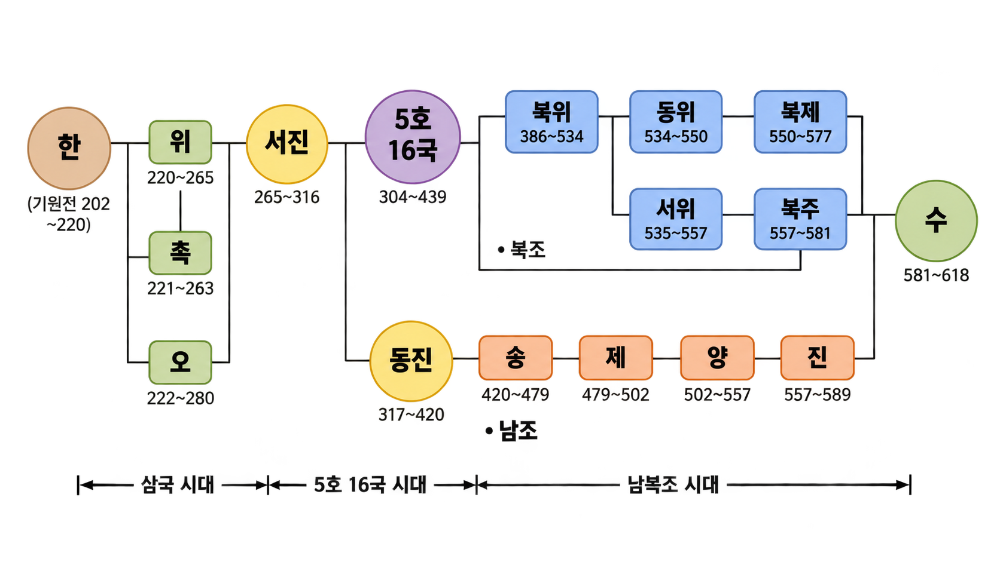
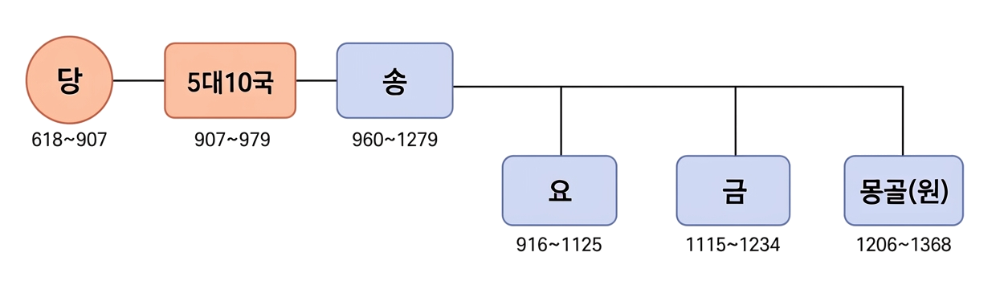

송의 성립과 발전 · 송대 경제·문화 · 북방 민족의 성장


송 태조는 금군을 증강하고 과거제에 전시 을/를 정례화하는 등 황제 독재 체제를 강화하였다.
남송 대 주희가 집대성한 성리학 은/는 인간의 심성과 우주의 원리를 탐구하였으며, 군신·부자의 의리, 대의명분과 화이론을 강조하였다.
송은 고려, 일본, 아라비아 상인과의 해상 무역을 활발히 전개하였으며, 임안(항저우) 등의 항구 도시에 설치된 시박사 을/를 통해 관리되었다.
정답: ④